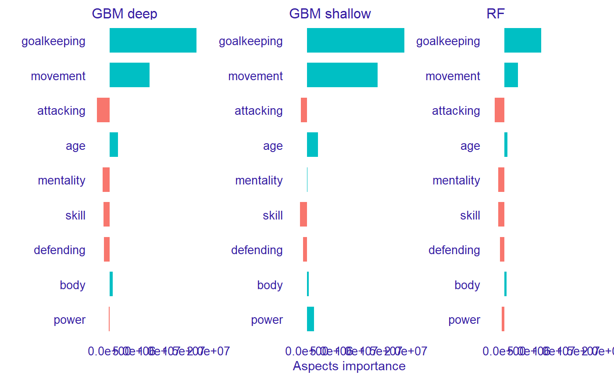

Usecase with FIFA 20 dataset
Katarzyna Pękala
2020-05-07
Source:vignettes/vignette_aspect_importance_fifa.Rmd
vignette_aspect_importance_fifa.RmdBuild models for predicting players value
library("ranger") library("gbm") library("rms") fifa_gbm_shallow <- gbm(LogValue~., data = fifa, n.trees = 250, interaction.depth = 1, distribution = "gaussian") fifa_gbm_deep <- gbm(LogValue~., data = fifa, n.trees = 250, interaction.depth = 4, distribution = "gaussian") fifa_rf <- ranger(LogValue~., data = fifa, num.trees = 250) fifa_ols <- ols(LogValue ~ rcs(age) + rcs(weight_kg) + rcs(height_cm) + rcs(attacking_crossing) + rcs(attacking_finishing) + rcs(attacking_heading_accuracy) + rcs(attacking_short_passing) + rcs(attacking_volleys) + rcs(skill_dribbling) + rcs(skill_curve) + rcs(skill_fk_accuracy) + rcs(skill_long_passing) + rcs(skill_ball_control) + rcs(movement_acceleration) + rcs(movement_sprint_speed) + rcs(movement_agility) + rcs(movement_reactions) + rcs(movement_balance) + rcs(power_shot_power) + rcs(power_jumping) + rcs(power_stamina) + rcs(power_strength) + rcs(power_long_shots) + rcs(mentality_aggression) + rcs(mentality_interceptions) + rcs(mentality_positioning) + rcs(mentality_vision) + rcs(mentality_penalties) + rcs(mentality_composure) + rcs(defending_marking) + rcs(defending_standing_tackle) + rcs(defending_sliding_tackle) + rcs(goalkeeping_diving) + rcs(goalkeeping_handling) + rcs(goalkeeping_kicking) + rcs(goalkeeping_positioning) + rcs(goalkeeping_reflexes), data = fifa)
Build explainers
fifa_without_target_column <- fifa[,-38] fifa_gbm_exp_deep <- DALEX::explain(fifa_gbm_deep, data = fifa_without_target_column, y = 10 ^ fifa$LogValue, predict_function = function(m, x) 10 ^ predict(m, x, n.trees = 250), label = "GBM deep" )
#> Preparation of a new explainer is initiated
#> -> model label : GBM deep
#> -> data : 5000 rows 37 cols
#> -> target variable : 5000 values
#> -> model_info : package gbm , ver. 2.1.5 , task regression ( [33m default [39m )
#> -> predict function : function(m, x) 10^predict(m, x, n.trees = 250)
#> -> predicted values : numerical, min = 277622.6 , mean = 7335964 , max = 101328616
#> -> residual function : difference between y and yhat ( [33m default [39m )
#> -> residuals : numerical, min = -22061472 , mean = 137323.1 , max = 19683638
#> [32m A new explainer has been created! [39mfifa_gbm_exp_shallow <- DALEX::explain(fifa_gbm_shallow, data = fifa_without_target_column, y = 10 ^ fifa$LogValue, predict_function = function(m, x) 10 ^ predict(m, x, n.trees = 250), label = "GBM shallow" )
#> Preparation of a new explainer is initiated
#> -> model label : GBM shallow
#> -> data : 5000 rows 37 cols
#> -> target variable : 5000 values
#> -> model_info : package gbm , ver. 2.1.5 , task regression ( [33m default [39m )
#> -> predict function : function(m, x) 10^predict(m, x, n.trees = 250)
#> -> predicted values : numerical, min = 435326.8 , mean = 7054727 , max = 81532407
#> -> residual function : difference between y and yhat ( [33m default [39m )
#> -> residuals : numerical, min = -36234153 , mean = 418559.6 , max = 49776575
#> [32m A new explainer has been created! [39mfifa_rf_exp <- DALEX::explain(fifa_rf, data = fifa_without_target_column, y = 10 ^ fifa$LogValue, predict_function = function(m, x) 10 ^ predict(m, x)$predictions, label = "RF" )
#> Preparation of a new explainer is initiated
#> -> model label : RF
#> -> data : 5000 rows 37 cols
#> -> target variable : 5000 values
#> -> model_info : package ranger , ver. 0.12.1 , task regression ( [33m default [39m )
#> -> predict function : function(m, x) 10^predict(m, x)$predictions
#> -> predicted values : numerical, min = 323037.3 , mean = 7033165 , max = 87991716
#> -> residual function : difference between y and yhat ( [33m default [39m )
#> -> residuals : numerical, min = -5363990 , mean = 440122.5 , max = 23679299
#> [32m A new explainer has been created! [39mfifa_rms_exp <- DALEX::explain(fifa_ols, data = fifa_without_target_column, y = 10 ^ fifa$LogValue, predict_function = function(m,x) 10^predict(m, x), label = "RMS" )
#> Preparation of a new explainer is initiated
#> -> model label : RMS
#> -> data : 5000 rows 37 cols
#> -> target variable : 5000 values
#> -> model_info : package stats , ver. 4.0.0 , task regression ( [33m default [39m )
#> -> predict function : function(m, x) 10^predict(m, x)
#> -> predicted values : numerical, min = 234822.4 , mean = 7399927 , max = 174001238
#> -> residual function : difference between y and yhat ( [33m default [39m )
#> -> residuals : numerical, min = -78501238 , mean = 73360.14 , max = 34026475
#> [32m A new explainer has been created! [39mCheck feature importance
fifa_mp_gbm_shallow <- model_parts(fifa_gbm_exp_shallow) fifa_mp_gbm_deep <- model_parts(fifa_gbm_exp_deep) fifa_mp_rf <- model_parts(fifa_rf_exp) fifa_mp_rms <- model_parts(fifa_rms_exp) plot(fifa_mp_gbm_shallow, fifa_mp_gbm_deep, fifa_mp_rf, max_vars = 20, bar_width = 4, show_boxplots = FALSE)

Triplot for model
# fifa_gbm_tri_shallow <- model_triplot(fifa_gbm_exp_shallow) # # fifa_gbm_tri_deep <- model_triplot(fifa_gbm_exp_deep) # fifa_gbm_tri_rf <- model_triplot(fifa_rf_exp) # # fifa_gbm_tri_rms <- model_triplot(fifa_rms_exp) # # # plot(fifa_gbm_tri_shallow, show_axis_y_duplicated_labels = T) # # plot(fifa_gbm_tri_deep, show_axis_y_duplicated_labels = T) # plot(fifa_gbm_tri_rf, show_axis_y_duplicated_labels = T)

# # plot(fifa_gbm_tri_rms, show_axis_y_duplicated_labels = T)
Investigate models for chosen instances (players)
player_gk <- fifa["J. Oblak",] player_mid <- fifa["L. Modric",] player_attack <- fifa["R. Lewandowski",]
fifa_variable_groups <- list( "age" = "age", "body" = c("height_cm", "weight_kg"), "attacking" = c("attacking_crossing", "attacking_finishing", "attacking_heading_accuracy", "attacking_short_passing", "attacking_volleys"), "skill" = c("skill_dribbling", "skill_curve", "skill_fk_accuracy", "skill_long_passing", "skill_ball_control"), "movement" = c("movement_acceleration", "movement_sprint_speed", "movement_agility", "movement_reactions", "movement_balance"), "power" = c("power_shot_power", "power_jumping", "power_stamina", "power_strength", "power_long_shots"), "mentality" = c("mentality_aggression", "mentality_interceptions", "mentality_positioning", "mentality_vision", "mentality_penalties", "mentality_composure"), "defending" = c("defending_marking", "defending_standing_tackle", "defending_sliding_tackle"), "goalkeeping" = c("goalkeeping_diving", "goalkeeping_handling", "goalkeeping_kicking", "goalkeeping_positioning", "goalkeeping_reflexes"))
pa_fifa_gbm_attack_deep <- predict_aspects(x = fifa_gbm_exp_deep, new_observation = player_attack, variable_groups = fifa_variable_groups) pa_fifa_gbm_attack_shallow <- predict_aspects(x = fifa_gbm_exp_shallow, new_observation = player_attack, variable_groups = fifa_variable_groups) pa_fifa_rf_attack <- predict_aspects(x = fifa_rf_exp, new_observation = player_attack, variable_groups = fifa_variable_groups) pa_fifa_rms_attack <- predict_aspects(x = fifa_rms_exp, new_observation = player_attack, variable_groups = fifa_variable_groups) plot(pa_fifa_gbm_attack_deep, pa_fifa_gbm_attack_shallow, pa_fifa_rf_attack, pa_fifa_rms_attack)

pa_fifa_gbm_mid_deep <- predict_aspects(x = fifa_gbm_exp_deep, new_observation = player_mid, variable_groups = fifa_variable_groups) pa_fifa_gbm_mid_shallow <- predict_aspects(x = fifa_gbm_exp_shallow, new_observation = player_mid, variable_groups = fifa_variable_groups) pa_fifa_rf_mid <- predict_aspects(x = fifa_rf_exp, new_observation = player_mid, variable_groups = fifa_variable_groups) pa_fifa_rms_mid <- predict_aspects(x = fifa_rms_exp, new_observation = player_mid, variable_groups = fifa_variable_groups) plot(pa_fifa_gbm_mid_deep, pa_fifa_gbm_mid_shallow, pa_fifa_rf_mid, pa_fifa_rms_mid)

pa_fifa_gbm_gk_deep <- predict_aspects(x = fifa_gbm_exp_deep, new_observation = player_gk, variable_groups = fifa_variable_groups) pa_fifa_gbm_gk_shallow <- predict_aspects(x = fifa_gbm_exp_shallow, new_observation = player_gk, variable_groups = fifa_variable_groups) pa_fifa_rf_gk <- predict_aspects(x = fifa_rf_exp, new_observation = player_gk, variable_groups = fifa_variable_groups) pa_fifa_rms_gk <- predict_aspects(x = fifa_rms_exp, new_observation = player_gk, variable_groups = fifa_variable_groups) plot(pa_fifa_gbm_gk_deep, pa_fifa_gbm_gk_shallow, pa_fifa_rf_gk, pa_fifa_rms_gk)

plot(pa_fifa_gbm_gk_deep, pa_fifa_gbm_gk_shallow, pa_fifa_rf_gk)

Session info
#> R version 4.0.0 (2020-04-24)
#> Platform: x86_64-w64-mingw32/x64 (64-bit)
#> Running under: Windows 10 x64 (build 18362)
#>
#> Matrix products: default
#>
#> locale:
#> [1] LC_COLLATE=Polish_Poland.1250 LC_CTYPE=Polish_Poland.1250
#> [3] LC_MONETARY=Polish_Poland.1250 LC_NUMERIC=C
#> [5] LC_TIME=Polish_Poland.1250
#>
#> attached base packages:
#> [1] stats graphics grDevices utils datasets methods base
#>
#> other attached packages:
#> [1] rms_5.1-4 SparseM_1.78 Hmisc_4.4-0 ggplot2_3.3.0
#> [5] Formula_1.2-3 survival_3.1-12 lattice_0.20-41 gbm_2.1.5
#> [9] ranger_0.12.1 triplot_0.1.0 DALEX_1.2.1
#>
#> loaded via a namespace (and not attached):
#> [1] ggdendro_0.1-20 splines_4.0.0 foreach_1.5.0
#> [4] assertthat_0.2.1 ingredients_1.2.0 latticeExtra_0.6-29
#> [7] yaml_2.2.1 pillar_1.4.4 backports_1.1.6
#> [10] quantreg_5.55 glue_1.4.0 digest_0.6.25
#> [13] RColorBrewer_1.1-2 checkmate_2.0.0 colorspace_1.4-1
#> [16] sandwich_2.5-1 htmltools_0.4.0 Matrix_1.2-18
#> [19] pkgconfig_2.0.3 mvtnorm_1.1-0 purrr_0.3.4
#> [22] scales_1.1.0 jpeg_0.1-8.1 MatrixModels_0.4-1
#> [25] htmlTable_1.13.3 tibble_3.0.1 farver_2.0.3
#> [28] ellipsis_0.3.0 TH.data_1.0-10 withr_2.2.0
#> [31] nnet_7.3-13 magrittr_1.5 crayon_1.3.4
#> [34] memoise_1.1.0 polspline_1.1.17 evaluate_0.14
#> [37] fs_1.4.1 nlme_3.1-147 MASS_7.3-51.5
#> [40] foreign_0.8-78 tools_4.0.0 data.table_1.12.8
#> [43] lifecycle_0.2.0 multcomp_1.4-13 stringr_1.4.0
#> [46] munsell_0.5.0 glmnet_3.0-2 cluster_2.1.0
#> [49] compiler_4.0.0 pkgdown_1.5.1 rlang_0.4.6
#> [52] grid_4.0.0 iterators_1.0.12 rstudioapi_0.11
#> [55] htmlwidgets_1.5.1 labeling_0.3 base64enc_0.1-3
#> [58] rmarkdown_2.1 gtable_0.3.0 codetools_0.2-16
#> [61] R6_2.4.1 gridExtra_2.3 zoo_1.8-8
#> [64] knitr_1.28 dplyr_0.8.5 rprojroot_1.3-2
#> [67] shape_1.4.4 desc_1.2.0 stringi_1.4.6
#> [70] Rcpp_1.0.4.6 vctrs_0.2.4 rpart_4.1-15
#> [73] acepack_1.4.1 png_0.1-7 tidyselect_1.0.0
#> [76] xfun_0.13